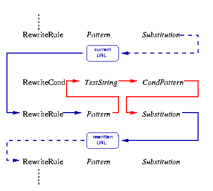
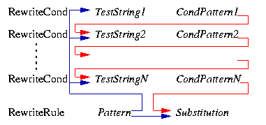

Apache的Mod_rewrite学习（一）
车东很早就写了一篇文章来介绍利用mod_rewrite模块来达到用静态页面形式的链接隐藏后台的动态页面。
Apache的rewrite模块，提供了一个基于规则的重写(rewrite,也许译为重构更为合适)引擎，来实时重写发送到Apache的请求URL。因功能极其强大，被称为URL重写的“瑞士军刀”。
这个模块使用一个基于正则表达式解析器开发的重写引擎，根据web管理员定义的规则来实时(on the fly)重写请求URL。它支持任意数目的重写规则，以及附加到一条规则上的任意数目的规则条件，从而提供了一套非常灵活和功能强大的URL处理机制。URL处理操作的实施与否，依赖于各种各样的条件检查，如检查服务器变量、环境变量、HTTP头字段、时间戳的值，甚至外部数据库的检索结果。这个模块可以在服务器范围内(http.conf)、目录范围内(.htaccess)或请求串(query-string)的一部分处理有关的URL。重写的结果URL，可以指向一个站内的处理程序、指向站外的重定向或者一个站内的代理。与灵活和功能强大相随的是设置的复杂，别指望一天内弄明白整个模块。(所以，这个学习笔记也分了几部分：)
内部处理过程
API阶段
首先，Apache处理HTTP请求是分阶段进行的,Apache API为每个阶段提供了一个钩子(hook)。Mod_rewrite使用了其中的两个钩子：一个用来在HTTP请求被读取但还没有访问授权验证之前进行URL_to_filename转换，一个用来在授权验证完成且目录设置文件(.htaccess)读取之后、但内容处理器(content handler)被调用之前激化，进行修补(fixup).因此，当一个请求到达，Apache决定了相关的服务器（或虚拟服务器）以后进行URL_to_filename阶段，重写引擎(rewrite engine)开始处理服务器设置中的重写指令(mod_rewrite directives).接下来几个阶段过后进入修补阶段，此时最终的数据所在的物理目录已经找到，目录配置中的重写指令开始执行。在这两个阶段，mod_rewrite都是将URL重写为新的URL或文件名，所以看起来并没有明显的区别。对API的这种应用，并不是一开始就是这样设计的，而是Apache1.x不得已而为之。为了搞清这个问题，以下两点需要记住。
1)虽然mod_rewrite能进行URL到URL、URL到文件名字甚至文件名字到文件名字的转换，API(1.x)目前提供了一个URL_to_filename转换。在Apache2.0中，这两个钩子会被加进去，整个过程会更加清晰。一个事实必须清楚的记得：Apache在URL_to_filename钩子中，做得比API设计的功能更多。
2)不可思议的是，mod_rewrite能在目录范围内（如根据.htaccess文件的指令配置）进行URL处理，虽然URL很早就已经被转换为文件名字了。只所以会如此，是因为.htaccess文件存在于文件系统中。也就是说，在这个阶段来进行URL处理，是非常晚的时候了。为了解决这个"先有鸡还是先有蛋"的问题，mod_rewrite用了一个小技巧：当在目
录范围内处理URL/filename时，mod_rewrite先将文件名逆转回相关的URL(虽然通常是不可能的，但请参见下面用以实现这个技巧的RewriteBase指令)，然后据这个新URL生成一个站内的子请求(internal sub-request)，这又重开始了API进程。Mod_rewrite尽量使这些复杂的步骤对用户透明，但应要记住：虽然目录范围URL的真正处理过程很快很高效，但这一阶段会因为这个"鸡和蛋"的问题而变得很慢和低效。从另一方面来看，这也是mod_rewrite提供给普通用户进行目录范围内的URL处理的唯一途径.
规则集(RewriteRule指令集合)处理过程
当mod_rewrite在上述的两个API阶段被激活时，它会从它的配置数据结构（在开始服务器上下文(per-server context)或目录上下文(per-directory context)时创建的）中读取配置的规则集，然后URL重写引擎启动来执行包含的规则集（一个或多条规则以及它们的条件）。两种上下文中的处理过程都是一样的，差别只是在最后的结果处理过程上。
规则集中规则的顺序是非常重要的，因为重写引擎以特定的顺序来处理它们。重写引擎顺序遍历规则集，当一条规则匹配时，引擎会去遍历与它相关的条件集(RewriteCond指令集合).由于历史的原因，条件集先被列出来，因此控制流流程有点曲折(long-winded).如图一所示：
正如所看到的，首先URL会与每条规则的模板(pattern)比较，当匹配失败时，立即停止对当前规则的处理进入下一条规则。当匹配成功时，mod_rewrite寻找相关的规则条件。如果找不到相关的条件，则直接执行规则中定义的替换，然后回到规则遍历的过程。如果找到了相关的条件，则启动一个内部循环，依次检查各个条件。对于检查，我们不是拿一个模板来匹配当前的URL，而是先创建一个TestString串，将串内的变量、后向引用(bakc-reference)、查询结果(map lookups)等展开，然后用这个TestString和条件式中的CondPattern进行匹配，如果匹配失败，则整个条件集且这个规则都不再执行，重要回到规则遍历中；如果匹配成功，则检查下一个条件，如果所有的条件都满足，则执行规则中定义的替换动作。
特殊字符的转义
既然基于正则式，则当然会有特殊字符的问题。在1.3.20版本的Apache中，通过在特殊字符前加一个“\”来将TestString或Sustitution串的特殊字符转义。
正则式的后向引用
 有一点需要记住：一旦在模板(pattern)或条件模板(CondPattern)中使用了括号，则后向引用已经自动产生了，你可以在Sustitution或TestString中通过$N或%N来引用相关的值。如图，描述了后向引用的值可以传到的位置。
配置指令(Configuration Directives)
| 指令 | 语法 | 默认值 | 说明 | 备注 |
| RewriteEngine | RewriteEngine on|off | Off | 开关重构引擎 | 默认时不能继承，故每个虚拟主机都要有自己的开关指令。 |
| RewriteOptions | RewriteOptions Option | MaxRedirects=10 | 设置一些特殊参数 | inherit:配置是否继承，MaxRedirects=number:内部重定向次数 |
| RewriteLog | RewriteLog file-path | None | 设定重写log文件 | 用RewriteLogLevel 0来禁止日志 |
| RewriteLogLevel | RewriteLogLevel Level | RewriteLogLevel 0 | 设置日志级别 | 0表示没有，2以上用于debug，9及以上表示全部信息 |
| RewriteLock | RewriteLock file-path | None | 设置RewriteMap程序的同步锁文件 | 要求是本地文件，此文件只对rewriting map-program有效。 |
| RewriteMap | RewriteMap MapName MapType:MapSource | Notused per default | 定义重写影射 | 具体说明参见文档 |
| RewriteBase | RewriteBase URL-path | physical directory path | 设置目录范围内重写的基本URL | 具体说明参见文档 |
| RewriteCond | RewriteCond TestString CondPattern | None | 定义规则条件 | 具体说明参见文档 |
| RewriteRule | RewriteRule Pattern Substitution | None | 定义重写规则 | 具体说明参见文档 |
参考资料：
http://httpd.apache.org/docs/mod/mod_rewrite.html
Posted by Hilton at October 30, 2003 11:25 PM
| TrackBack